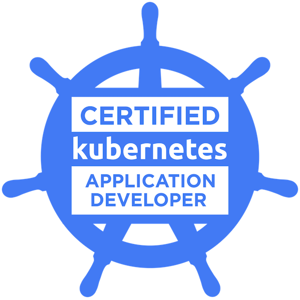

July 30, 2022
Hybrid nodes with ClusterClass
Introduction This post will be quick one to show how build a hybrid cluster using ClusterClass.
The idea behind ClusterClass is simple: define the shape of your cluster once, and reuse it many times, abstracting the complexities and the internals of a Kubernetes cluster away. [1]
From the original CAEP: Cluster API does not expose a native way to provision multiple clusters of the same configuration. The ClusterClass object is supposed to act as a collection of template references which can be used to create managed topologies.
July 12, 2022
Cluster API Provider for AWS (CAPA)
Introduction The Cluster API is a Kubernetes project to bring declarative, Kubernetes-style APIs to cluster creation, configuration, and management. You can create new workload clusters from a management cluster in a descritive way, the ClusterAPI controllers provide the initial management cluster setup and a tool called clusterctl to manage them. Workloads clusters are specilized controllers on separated projects called providers. Each cloud provider will have it's own controllers and ways to build the workload cluster obeying the rules and logic defined in the spec and workflow diagrams here [2].
June 10, 2022
Border Gateway Protocol (BGP) and Kubernetes
Introduction On this post I want to write a bit about Border Gateway Protocol, Calico and Kubernetes, in the examples we are going to see an use case with OpenBSD/openbgp and after Project Calico with BGP mode to illustrate how this protocol can be used in the CNI to provide automatic routing across nodes.
After reading leave comments in the end and share the post. Nuff said.
BGP protocol The RFC of BGP-4 is pretty clear in the abstract about the primary function of BGP [1] being is to exchange network reachability information with other BGP systems.
March 20, 2022
Cluster API Provider for Azure (CAPZ)
Introduction From the official documentation [1] we have the original definition of Cluster API, it brings a declarative, Kubernetes-style APIs to cluster creation, configuration and management. The API itself is shared across multiple cloud providers allowing for true Azure hybrid deployments of Kubernetes.
Target Cluster Diagram This cluster was generated using the make create-workload-cluster from the CAPZ repository.
The diagram describes the CRDs [2] and objects created related to this Workload cluster inside Azure.
January 22, 2022
KPNG Windows Userspace
Introduction KPNG (KubeProxy Next Generation, kproxy v2) has as a goal provide a more scalable version of service proxies on Kubernetes, the idea is provide a core system that comunicates with the API server and provides an SHIM interface for the backends. Backends are specialized code that implement the required steps to provide the load balancing for the endpoints based on the data plane technology of choice (iptables, ipvs, HCN, etc.
December 18, 2021
Kube-proxy Windows Kernelspace Mode
Introduction Sorry not sorry, this is the fourth post about kube-proxy modes, don't worry the evil is in the details. This time these writings will cover Windows kernelspace mode. This proxy mode is used in Calico and Flannel CNIs and the APIs and golang binding used here (HCN) are shared on both technologies, so having a good understanding of how the public-facing interaction works and methods signatures is a good step on enabling the coding on windows container kernel networking capabilities.
November 27, 2021
Kube-proxy Linux Userspace Mode
Introduction The following post continues a deep dive into kube-proxy modes, taking another approach to tackle the complexity that lies on this kind of system, loop diagrams are an interesting one, and we have used this to analyze the information flow in the Windows userspace mode. To have another holistic view of the entire mode and understand how these parts are interconnected can be a hard task in distributed systems, this is true not only for systems running on different machines, but for ones with parallel and concurrent mechanisms as well.
October 17, 2021
Kube-proxy Winuserspace Mode
Introduction This post will introduce and detail the windows userspace mode on kube-proxy, the code walkthrough provided here has the goal to clarify the event based architecture of kube-proxy, and bring attention to how this component watches and reacts for events happening on Services and Endpoints API objects. This component goal is to proxy and load-balance the traffic to a binded IP/PORT pair across different backend services. Read more about Kube-Proxy in the official docs [1].
September 3, 2021
Windows and Calico overlay networking
Introduction Windows are nowadays a must in a lot of multi-os clusters around companies, all big providers support the creation of Windows server machines and the support of containers in this OS is getting stronger on a daily basis [1].
The Kubernetes community have the Windows Special Interest Group [2], focusing on workloads and scheduling support for these Windows nodes. As support tooling and sub-projects around the main SIGs on K8s, a few experimentations are born like the Dev-Tools [3].
August 28, 2021
CNI plugins and kindnet
Introduction With the advance of Containers, the network segmentation was required at level of the isolated applications, logically it's another copy of the network stack, with it's own routes, firewall rules and net devices. By convention these named network namespaces (ns) is an object at /var/run/netns/ as we are going to see in the sequence. A few tools to manage netns at user-space level resides on [1].
A standard called CNI (Container Network Interface) was created, to formalize and create a baseline that consists of a specification and libraries for writing plugins to configure network interfaces in Linux containers, along with a number of supported plugins.
